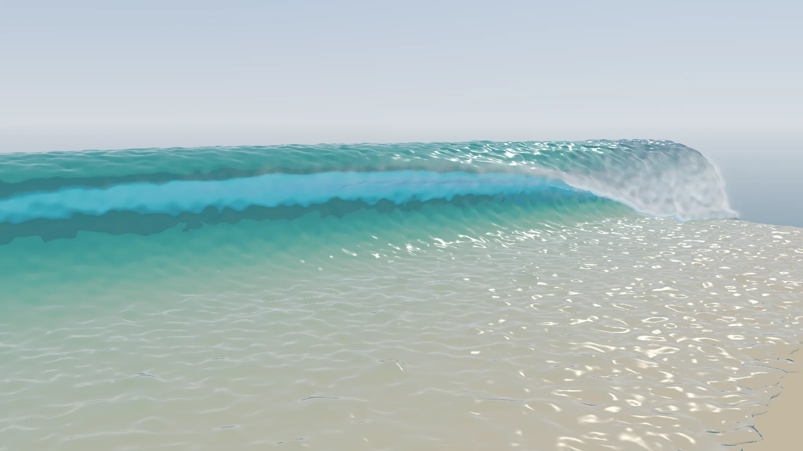
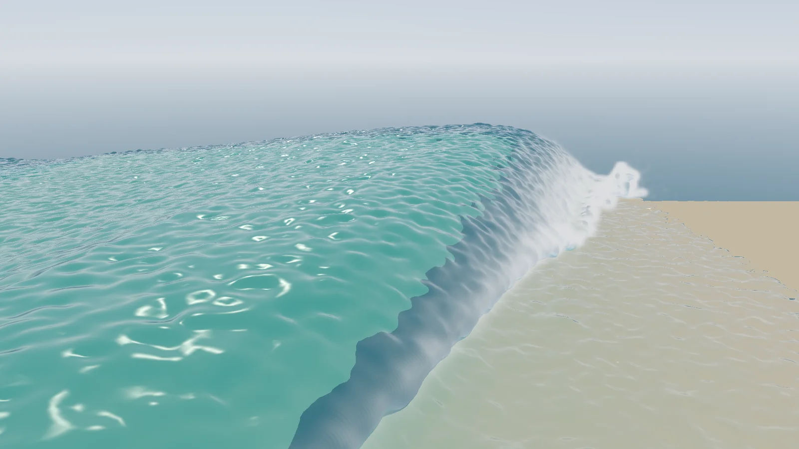

ACM TOG 44(4) · SIGGRAPH 2025 · DOI 10.1145/3730854 · 预印本 2025-07-07 · 中文精读
Adaptive Phase-Field-FLIP for Very Large Scale Two-Phase Fluid Simulation
作者 Bernhard Braun（慕尼黑工业大学 TUM）、Jan Bender（亚琛工业大学 RWTH）、Nils Thuerey（TUM）。
关于这份精读。这篇是 ACM TOG 论文（SIGGRAPH 2025），PDF 首页写着“© 2025 Copyright held by the owner/author(s). Publication rights licensed to ACM”；我读的是作者单位 TUM 公开的预印本（PDF 创建于 2025-07-07，23 页）。没有 arXiv 版本。按本站规则不放原图：25 张图都用文字描述，“看原图”打开预印本 PDF 的对应页。图 17 是矢量图，我从 PDF 导出 SVG，按对数刻度读出四组柱高后重画，图注标“重画”。另有两张示意图和两张交互图是我按论文公式画的。正文不逐字翻译，表格数字照录原文。“读者注”是我核算或对照的结果，不属于论文内容，页尾有汇总。
代码。作者只开源了 MSBG 数据结构（tum-pbs/MSBG，Apache-2.0），读的是 commit 655038d（2025-06-09）。仓库里只有数据结构、粒子溅射和曲率流演示，没有PF-FLIP 求解器、压力求解器和喷雾模型。代码对照见 代码对照 一节。
这篇是怎么来的。用户在小红书上看到一条笔记：一位艺术家在 SIGGRAPH 2025 看到 PF-FLIP 后，花两个月在 Autodesk Bifrost 里做出了破碎海浪。我们先用 Taichi 在 GPU 上写了一个单相 FLIP 破碎浪（代码不在本仓库），再回头精读这篇。两者的差距见 和我们的 Taichi 复现对照。
电影里的大型水体（巨浪、瀑布、溃坝、陨石入海）看起来“大”，很大程度上靠的是空气：水猛烈运动时会带动周围空气，空气阻力把水撕成喷雾和水雾，水雾再被空气中的湍流卷成一条条丝带。图形学里常用的单相水模拟把空气当作压力为零的真空，于是只能靠“白水”粒子之类的经验做法往上补，而且怎么放大尺度都像“慢动作的小水花”。
这篇论文要做的是：把水和空气都当成流体一起算，而且要算到几十亿粒子、几千格每维的分辨率，只用一台 CPU 工作站。为此要同时解决三件事：
结果：MSBG 在粒子转网格、PDE 迭代、网格转粒子三项上比 OpenVDB 快 3.7–9.6 倍（表 2）；压力求解比不完全 Cholesky 预条件少两个数量级的迭代（图 17）；最大的例子有 31 亿 FLIP 粒子，每步约 2 分钟，一共跑了 3.5 天（图 1、表 7）。
| 项目 | 数值 | 出处 |
|---|---|---|
| 水气密度比 | 1000:1 | 3.3 节 |
| 相场界面厚度 | ε_φ = r_0 = Δx（一个格子） | 3.3 节 |
| FLIP 权重 α_FLIP | 水 0.985，空气 0.96 | 8.4 节 |
| MSBG 基本块分辨率 | 默认 16（也用 32），细化 3–4 级 | 4.2 节 |
| 平滑器松弛因子 | ω = 6/7 | 6.3 节 |
| CFL 数 | 3–4，每帧 2–7 步 | 8.4 节 |
| 压力残差容差 | 10⁻⁴（CFD 对比用 10⁻⁸） | 8.3 节 |
| 硬件 | AMD Threadripper 32 核、256 GB 内存，不用 GPU | 8 节 |
| 最大例子 | 压力 6144×2048×1600，喷雾 18432×6144×4800；31 亿 FLIP + 10 亿喷雾粒子；每步 1.9 分钟，共 3.5 天 | 图 1、表 7 |
作者先用一个例子说明问题（图 2）：50 米的陨石高速撞进海里，单相求解器的结果像往池塘里扔了块石头再放慢镜头。原因是大尺度水流本质上是两相现象：大量水体剧烈运动会带动空气，空气动力随水气相对速度的平方增长；韦伯数很高，表面张力撑不住，水被撕成液滴；液滴也不走抛物线，而是跟着湍流空气走。要把这些算出来，既要有水气耦合的速度场，也要有足够的分辨率，从液滴尺度一直覆盖到大浪尺度。
首页大图，左右两张。左边是一张真实照片（巨浪拍在防波堤上，浪顶炸开大片白色水雾，署名 PA / Eloy Alonso）；右边是本文的模拟：一道大浪撞上水槽中间的障碍物，浪头碎成大片喷雾和水雾云。图注写这个例子约有 30 亿粒子，平均每步约 2 分钟，没有用程序化效果或喷雾后处理。
动机例子：50 米的陨石高速撞入海面，三列对比。左：标准单相求解器（Bridson 2015）；中：单相加二次喷雾粒子（Ihmsen 等 2012）；右：本文的两相模拟。单相时“水花边缘”冲得很高，喷雾粒子均匀散开；两相时喷雾被空气湍流卷成复杂的团块和丝带。三者分辨率相同：压力 1024³，喷雾密度 3072³。
作者归纳了三个挑战：两相模拟本身、空间自适应、高效的迭代压力求解器。对应四项贡献：
引言里还给了两个后文会用到的数字：MSBG 在 32768³ 的有效分辨率上，两分钟内解完一个有 1000 亿未知量的测试 PDE（读者注 6 核算）；所有大例子都在单台工作站上跑，没有用 GPU。
大坝泄洪：约 40 m/s 的水柱从闸门射出，砸进下游水池，周围是翻滚的水雾。右下角嵌了一张三峡大坝泄洪的真实照片作参考。图注说没有为照片条件调参，也没有加湍流增强或后处理；压力有效分辨率 2048×1024²，水面和喷雾 8192×4096²，每步约 40 秒。
按主题归纳，括号里是论文认为的不足：
破碎的海浪，浪顶后方拖着一缕缕水雾，是空气在浪峰后形成的湍流尾流把雾卷成的丝带。图注说这种效果在图形学里以前没法用完全物理的高分辨率动画做出来。
要解的是两种不可压、不相溶流体的 Navier–Stokes 方程：
\[ \frac{\partial \mathbf u}{\partial t} = -\mathbf u\cdot\nabla\mathbf u - \frac{\nabla p}{\rho} + \nu\nabla^2\mathbf u + \frac{\mathbf f}{\rho} \tag{1} \] \[ \nabla\cdot\mathbf u = 0 \tag{2} \]下标 l、g 表示液相和气相，ρ_l ≫ ρ_g。相函数 φ: Ω → [0, 1] 区分两相，密度 ρ(x) = lerp(ρ_l, ρ_g, φ(x))，黏性 ν(x) 同样插值。
界面表示方法分两大类：显式追踪（例如网格）和隐式捕捉。隐式捕捉又分尖锐界面（VOF、水平集）和扩散界面（相场）。VOF 守质量但要做复杂的几何重建；水平集一般不守质量，要反复重新初始化；经典相场要解带正则项的四阶 PDE，往往还要额外措施才能守质量。PF-FLIP 是另一条路：混合欧拉—拉格朗日，没有任何界面维护或重建步骤。
FLIP 把粒子的优点（无耗散、守质量的输运）和网格的优点（压力投影里空间导数好离散）结合起来。粒子互不交互，不需要邻居搜索，代价是额外的噪声。作者认为这对目标场景不是坏事，因为湍流飞溅本身就“很吵”。记号：p、q 是粒子，i、j 是格子；交错 MAC 网格，压力在格心，速度在面心；u_ai 表示格子 i 在 a 轴方向那个面（位于 x_i + e_a/2）上的速度。
每个粒子有一个固定的类型：水或空气。每步开始把质量和动量溅到格子面上：
\[ m_{ai} = \sum_p w_{ai,p}\, m_p \tag{3} \] \[ \mathbf P_{ai} = \sum_p w_{ai,p}\, m_p \mathbf u_p \tag{4} \] \[ m_p = \begin{cases} \rho_l V_p & p \text{ 是水粒子} \\ \rho_g V_p & p \text{ 是空气粒子} \end{cases} \tag{5} \]类型终身不变，所以质量守恒。偶尔会删掉卡在固体里的粒子，作者说实际上不造成明显的质量损失，也一般不需要重新补种粒子。没有尺寸自适应时 V_p = 1。
因为溅射权重之后要拿来当相场用，需要比较光滑，所以不用 FLIP 常见的三线性权重，而是用类似 SPH 的高阶多项式核：
\[ w_{ai,p} = \Big(\max\big(1 - (\lVert \mathbf x_i + \mathbf e_a/2 - \mathbf x_p\rVert / r_p)^2,\ 0\big)\Big)^3 \tag{6} \]核的支撑是球形的，是距离平方的三次式，所以不用开方。面动量除以面质量得到临时面速度 ũ*_ai = P_ai / m_ai。
相场几乎是白送的：上一步累加的溅射权重乘质量，就是面上的原始质量密度 ρ̃_ai = m_ai，而且正好在变系数泊松方程需要的位置（格子面上）。原始密度有粒子分布不均带来的高频起伏，但水气密度差 1000 倍，起伏远不足以混淆两相。作者把原始值归一化、压缩、截断：
\[ \phi(\tilde\rho) = \begin{cases} 0 & \tilde\rho < \tilde\rho_{\min} \\ \min\Big(\sqrt{\dfrac{\max(\tilde\rho - \tilde\rho_{\min},\,0)}{\alpha_\phi\,\tilde\rho_0\,\rho_l}},\ 1\Big) & \text{其他} \end{cases} \tag{7} \]作者强调两点。一是和“变密度 FLIP”的区别：那本质上是单相求解器，相内密度连续变化；PF-FLIP 明确把相场和原始密度分开，再用相场插值出物理密度和黏性。二是质量和动量用同一套粒子输运，不像水平集、VOF 那样速度和界面各用一种输运格式，所以不会出现两者不一致。
图 6 是用式 (7) 算出的相场的一张二维切片：水体呈亮色，内部有细碎的颗粒状起伏；空气一侧是均匀的黑色，因为空气里的密度起伏幅度小 1000 倍。画出的等值线只是示意，算法本身不需要表面重建。图 7 是一维例子：横轴是位置，左边是空气粒子、右边是水粒子；原始密度在水一侧围绕 1 上下起伏（标注“粒子分布不均导致的密度起伏”），在空气一侧贴近 0（标注“空气里的起伏小 1000 倍”）；相场曲线在界面处从 0 跳到 1，把两侧干净地分开。
交互 · 按式 (7) 画的 φ(ρ̃) 曲线（我画的，不是原图）。横轴是原始密度除以“满水密度” ρ_l ρ̃_0。竖线是 ρ̃_min；虚线是 φ = 0.5，也就是格子被标成“水”的门槛。
把原始密度写成满水密度的比例 s = ρ̃ / (ρ_l ρ̃_0)。ρ̃_min 对应 s_min = η_φ ρ_g / ρ_l。论文写 η_φ = log(ρ_l/ρ_g)，没说是哪个底；按自然对数，η_φ = ln 1000 = 6.91，s_min = 0.0069，也就是满水密度的 0.69%，相当于空气平均密度的 6.9 倍；如果是以 10 为底，η_φ = 3，s_min = 0.3%（未核实是哪一个）。φ = 0.5 时 (s − s_min)/α_φ = 0.25，所以 α_φ = 1 时，一个格子的原始密度达到满水的 25.7% 就会被标成“水”；Rayleigh–Taylor 测试用的 α_φ = 0.5 对应 13.2%。另外，α_φ = 1 时即使正好是满水密度，φ = √0.9931 = 0.9965，不到 1；所以论文另外规定水—水之间的面直接取 φ = 1。上面的交互图可以拖动 α_φ 看这两个门槛怎么移动。
以前的 FLIP 两相方法（Boyd 和 Bridson 2012）要用“粒子反弹”防止水和空气粒子乱混。PF-FLIP 的分辨率足够高，可以在两相之间用更符合物理的无滑移条件，界面上速度不跳变，所以不需要这个经验做法。如果粒子还是跑到了“错误的一侧”，就把它解释成亚网格尺度的液滴或气泡：位置处 φ < 1/2 − δ_φ 的水粒子变成液滴，φ > 1/2 + δ_φ 的空气粒子变成气泡，δ_φ 默认 0.2。液滴按第 7 节作为纯拉格朗日质点继续模拟，重新落回水体时再变回 FLIP 粒子。气泡在目前的实现里直接删掉，作者说在大尺度场景里它们看不出来。
表面张力在两相求解器里很贵，但主要影响毫米级的毛细波，对目标场景不重要，所以直接忽略。
P2G 加重力之后的速度 u* 一般不满足散度为零。标准做法是减去按密度倒数加权的压力梯度 u = u* − Δt ∇p / ρ，两边取散度得到变系数泊松方程：
\[ \Delta t\, \nabla\cdot\big(\beta(\mathbf x)\nabla p(\mathbf x)\big) = \nabla\cdot\mathbf u^*(\mathbf x) + c_{\mathrm{div}}(\mathbf x) \tag{8} \] \[ \beta(\mathbf x) = 1/\rho(\mathbf x) \tag{9} \]c_div 是散度修正项，让局部粒子密度保持在目标值 ρ̃_0 附近，保证体积守恒（Losasso 等 2008）。一维离散：
\[ \beta_{i+\frac12}\Big(\frac{p_{i+1}-p_i}{\Delta x}\Big) - \beta_{i-\frac12}\Big(\frac{p_i-p_{i-1}}{\Delta x}\Big) = \frac{1}{\Delta t}\big(u^*_{i+\frac12} - u^*_{i-\frac12}\big) \tag{10} \]系数 β 在格子面上采样，而 PF-FLIP 的相场本来就在面上，不需要像别的方法那样从格心插值，也不需要为 Ghost Fluid 外推准备符号距离场。矩阵 L 对称正定，适合预条件共轭梯度，但高密度比让它非常病态，即使用多重网格也收敛很慢，第 6 节专门解决。
得到无散的网格速度后，减去加外力之前保存的临时速度，得到这一步的速度增量：
\[ \Delta\mathbf u = \mathbf u - \tilde{\mathbf u}^* \tag{11} \]插值到粒子上加到粒子速度。FLIP 通常再混入一点网格速度（PIC）来压噪声，论文印出的形式是：
\[ \mathbf u_p^{\text{new}} = \alpha_{\text{FLIP}}\,\mathbf u_p^{\text{old}} + I(\Delta\mathbf u, \mathbf x_p) + (1-\alpha_{\text{FLIP}})\,I(\mathbf u, \mathbf x_p) \tag{12} \]拿一个最简单的情形检查：所有粒子和网格的速度原本都是 U，这一步网格速度整体加了 d。按印出来的式 (12)：α U + d + (1 − α)(U + d) = U + (2 − α) d，比应有的 U + d 多出 (1 − α) d。标准的 FLIP/PIC 混合（Bridson 2015）是 α(u_old + I(Δu)) + (1 − α) I(u)，这样才得到 U + d。所以式 (12) 应该是在 α_FLIP 后面漏了括号（我的推断，论文没有勘误）。我们的 Taichi 复现用的是标准形式。
水气交界处的速度梯度（比如破碎浪上方的风）由黏性控制，所以两相流需要按相变化的黏性。Bridson 指出 α_FLIP 引入的人工黏性直接决定物理黏性：
\[ \nu = (1-\alpha_{\text{FLIP}})\,\frac{\Delta x^2}{6\Delta t} \tag{13} \]作者利用这一点，在 G2P 时按粒子类型（水或空气）取不同的 α_FLIP，就以和无黏欧拉方程相同的成本解了带变黏性的完整两相方程。代价是能表示的黏性有范围：下限是压住 FLIP 噪声需要的最小黏性，上限受显式格式限制。作者认为对高分辨率、大 CFL 的大尺度水气场景，这是好的近似。最后粒子在无散速度场里用三阶 Runge–Kutta 推进，步长局部自适应；水的速度向空气一侧外推几格，保证水粒子用的是水的速度。
代入 CFL = vΔt/Δx，式 (13) 可写成 ν = (1 − α) Δx v / (6 CFL)。拿大坝泄洪（图 3）估一下：区域 200 m、2048 格，Δx ≈ 0.098 m；v = 40 m/s；CFL 取 8.4 节的 3–4 的中值 3.5；水的 α = 0.985。得到 ν_水 ≈ 0.015 × 0.098 × 40 / 21 ≈ 2.8 × 10⁻³ m²/s，约是真实水（1.0 × 10⁻⁶）的 2800 倍。空气 α = 0.96，ν_气 / ν_水 = 0.04 / 0.015 ≈ 2.7，而真实空气和水的运动黏性之比约为 15（1.5 × 10⁻⁵ 比 1.0 × 10⁻⁶）。这些是我按论文参数的估算，Δx 用的是最细层，实际 Δt 论文没给。结论是：式 (13) 的“黏性”实际上是数值黏性的大小，按相设置只是让空气比水更“黏”一点，并不对应真实物性；论文在 8.4 节也只说是好的近似。
三维流体模拟的成本随分辨率 n 按 O(n⁴) 增长（三个空间维度加时间步数），两相还让压力求解更难，所以必须自适应。块式方法把网格拆成均匀的小块，保持规则的访存模式。已有方法（VDB、SPGrid、块八叉树）一般用 4³ 或 8³ 的小块，以减少块内浪费的空格子：如果界面是光滑的二维曲面，块大小为 n 时空格子比例是 1 − O(n²)/n³，块越大越接近 100%（图 8 曲线 a）。
作者给了四个理由，主张用大得多的块（16³、32³）：
按公式重画 · 图 8 左的四条开销曲线（我按论文给的式子画；曲线 a、b 里 O(·) 的常数论文没给，这里取 1，只看趋势）。横轴是块分辨率 n，竖线标出 MSBG 默认的 16。
左：块大小和四种理论开销的关系，(a) 光滑界面附近每块浪费的格子，(b) 分形界面附近浪费的格子，(c) 块边界开销，(d) 1% 占用、单个浮点通道时稠密块索引的存储开销。右：MSBG 结构示意。上面是“自然界里的水气界面”，下面依次是细化图 M（每块一个层级数字，0 最细，例如 0 0 1 2 2 / 0 0 1 1 2 …）、线性的块索引网格（存块编号或空），以及最终的分辨率不同的块：靠近界面的块格子密，远离界面的块格子稀，但每块在空间里一样大。
MSBG 的做法：一个稠密的线性数组存块指针；所有块的几何大小固定，只改变每块的分辨率。这和树结构相反：树是改变块的大小、保持块内格子数不变。几何块大小每次模拟选定一次；块分辨率在模拟中随空间自适应变化（论文把“分辨率高的块”简称为“大块”）。每块的分辨率由块细化图 M 决定，M 由应用给的细化准则算出（5.4 节）。
限制是：细化层数最多为基本块分辨率的以 2 为底的对数。作者认为这不是问题，因为三维里每粗一级成本降为八分之一；本文所有结果最多用 3 或 4 级，基本块分辨率默认 16。粗层的块边界开销更大，但大部分格子都在最细的块里，所以影响有限。梯度、散度和固体边界的离散沿用 Losasso 2004、Weber 2015，跨分辨率时梯度用常数 Δg = 4/3 缩放（图 9c）。
| MSBG | 块八叉树 | |
|---|---|---|
| 构建（例如从粒子） | O(n)，容易并行 | O(n log n)，并行不简单 |
| 随机访问 | O(1) | O(log n) |
| 模板访问 | 统一访问 6 个邻块 | 访问数量不定的邻块，最多 24 个 |
| 分级（grading） | 快 | 并行困难 |
| 自适应 | 只受块栅格限制 | 不够灵活，“末端兄弟”分辨率必须相同 |
| 支持多色技巧 | 是 | 否 |
| 代码复杂度 | 低 | 高 |
| 细化深度 | log₂（基本分辨率） | 不限 |
网格自适应之外，粒子也要自适应。每个粒子有一个层级 l_p，半径 r_p = r_0 2^{l_p}。粒子层级和所在格子的网格层级 l_i = M[b_i] 是两回事。
细变粗时，已有方法把几个小粒子合并成大粒子，需要找邻居。作者的观察是：均匀分布的粒子在每个方向粗化一倍，等价于密度降为八分之一，而这可以通过随机删掉 7/8 的粒子得到。一般地，被标记粗化的粒子以概率
\[ \mathrm{prob}_{\mathrm{del}} = 1 - 1/\big(2^{\,l_{\text{new}} - l_{\text{old}}}\big)^3 \]被删除。为防止在粗细过渡区来回震荡，加了一个延迟粗化计数器做迟滞。
3.2 节说“粒子类型终身不变，所以质量守恒”。拆分确实守恒（1 个变 8 个）。但粗化是随机删除：粗化一级时每个粒子以 1/8 的概率留下，留下的粒子半径翻倍、体积变 8 倍（论文只写了 r_p = r_0 2^{l_p}，没明写 V_p 随层级变 8 倍，我是按体积推的），所以质量只在期望上守恒。局部波动很大：原来 8 个粒子的一小团，全部被删光的概率是 (7/8)⁸ = 34%；留下粒子数的相对标准差是 √(8 × 1/8 × 7/8) / 1 ≈ 94%。对 N 个粒子组成的区域，相对波动约为 √(7/N)，一百万个粒子时约 0.26%。粗化只发生在离水面远的区域，作者没有报告这部分的质量误差。
默认用离水气界面的距离。PF-FLIP 本身不维护距离场，所以把相场降采样、阈值化后，用一阶精度的推进算法算一个低分辨率的辅助 SDF d̃(x)。这个 SDF 只用于决定粒子细化，所以精度够用。也可以选用速度旋度的大小，以捕捉离开表面的流动细节（尤其是空气里的湍流，图 12 左列），但本文的例子都只用了距离准则。
数值方法的人工黏性取决于格子间距 Δx。多分辨率时 Δx 不同，人工黏性也就不同，这在 AMR 文献里经常被忽视。作者和 Ando 2013 一样，利用式 (13) 调整 α_FLIP；区别是他们按所在格子的间距而不是粒子大小来修正。这样粒子半径和格子大小就解耦了，在大 CFL、粒子一步可能跨过分辨率边界的情况下很关键。代码里有一个对应的编译开关，见 代码对照。
(a) 粒子密度和大小随离界面的距离变化：靠近水面的粒子小而密，水体深处的粒子大而稀。(b) 粒子采样的速度场（三维模拟的二维切片，显示涡量大小），格子大小跟着粒子大小变。(c) 粗细过渡处的压力梯度离散：细格压力 p_1 和粗格压力 p 的差除以 hΔ_g；细线是格子边界，粗线是 MSBG 块边界。
多分辨率离散保证了矩阵 L 对称、7 点模板，但高密度比让系数几乎不连续，即使多重网格预条件的 CG 也会变慢。作者提出一个完全自适应的多重网格预条件共轭梯度方法。
Shao 等 2022 用（无光滑的）代数聚合多重网格做固定分辨率单相流体，本质上是格心的 Galerkin 粗化：
\[ L^{2h} = R_h^{2h}\, L^h\, P_{2h}^h \tag{14} \]h 是细网格间距，P 和 R = Pᵀ 是延拓和限制算子。作者把它推广到多分辨率自适应网格。算法 1 是无矩阵、大规模并行的构建：每个格子只存对称 7 点模板的 3 个面系数，最细层的面系数直接由相场按式 (9) 给出；矩阵对角元是这些面系数之和。粗一级的面系数是细层对应 2×2 个细面系数之和乘缩放因子 s/4。缩放因子按两侧块的分辨率关系取：同级 2^l，粗—细 2^l σ_CF，细—粗 2^l σ_FC，其中 σ_CF = 1/(4Δg)、σ_FC = 2σ_CF，来自 4.2 节保持对称的多分辨率梯度离散和式 (14) 的 Galerkin 原则。某块在这一级没有更细的子块时，直接按引用复用上一级的系数。
MSBG 同时承载两套层级：MSBG 的分辨率层级 l 和多重网格层级 L；比 MSBG 块索引还粗的多重网格层用额外的均匀网格。和 SPGrid 的多分辨率金字塔相比，不需要额外的八叉树；多分辨率结构本身就允许平滑跨越分辨率边界，不需要额外的层间传递来收集和传播幽灵格子。
图 10 用一维例子说明多分辨率多重网格：MSBG 的多重网格层级和分辨率层级相互独立，左下角是均匀网格上 Galerkin 粗化的一维示意。图 11：(a) 八叉树上做不了红黑（棋盘）着色，块格上标着问号；(b) 本文两级红黑平滑器在一个并行半扫描中的活跃元素：两个分辨率层级（0 和 1）的块，每块里是按 SIMD 向量组织的格子，红黑交替。
平滑器通常是 1–3 次加权 Jacobi 或 Gauss–Seidel。Jacobi 好并行但收敛慢，还要一个临时的目标数组。作者在 MSBG 上做了一个混合 Gauss–Seidel（Baker 等 2011）：块之间按红黑顺序做并行的 Jacobi 半扫描，块内也按红黑顺序做原地 Gauss–Seidel，以整个 SIMD 字（AVX 下 8 个浮点数）为单位更新。块内的部分 Gauss–Seidel 收敛更快；红黑排序的块可以原地更新，不需要额外缓冲，内存省一半。和 P2G 一样，这依赖全局统一的块结构，树结构做不到。因为还有 Jacobi 成分，要乘阻尼因子 ω = 6/7（三维的最优值）保证收敛。
核心想法来自完全自适应多重网格（Rüde 1993；Kowarschik 等 2006）：只在残差大的地方集中做平滑。维护一个活跃块列表：初始包含这一层所有相关块（l(i, L) ≤ L 的块，加上更粗一级的一圈过渡块）；从无锁 FIFO 队列里取块松弛，松弛后最大有效残差仍超过阈值 θ 的块重新入队，边界格子残差超过 θ 的邻块也入队。和原方法不同，不等队列清空，只做固定的 10–20 轮，因为它只用在预条件器里。
为了提高缓存效率，一个块载入缓存后连续做多次扫描，摊薄从内存读数据和拼“光环缓冲”（邻块边界数据）的成本。扫描次数不固定：一直扫到块内残差降到初始的 1/3，接近三维泊松问题中 Gauss–Seidel 的最优收敛因子。几轮之后活跃块往往能整个放进 CPU 末级缓存，后面的迭代不再受内存带宽限制。
有效残差的定义。Kowarschik 等用按对角元缩放的残差。在两相问题里，空气区的对角元比水区大几个数量级（β = 1/ρ），缩放会把空气区残差的动态范围压小 1000 倍，空气块几乎永远进不了活跃列表。作者改用“块内局部松弛后所有变量的最大变化量乘以对角元”，相当于把两相的反差拉平。
自适应阈值。以前的工作用固定 θ 却不说怎么选。这里多重网格只是 CG 的预条件器，残差每轮 CG 迭代都在指数下降，固定 θ 不合适。作者对初始有效残差取对数直方图，θ 取均值加两倍标准差；直方图只用每块的残差最大值来建，很快。
柔性预条件共轭梯度。CG 要求预条件器对称，所以前后平滑次数必须一样，而自适应松弛天然不对称。作者用柔性 PCG（Bouwmeester 等 2015）：把 Fletcher–Reeves 更新换成 Polak–Ribière，即使预条件器不对称正定也稳健。它要多存一个向量，正好被红黑块平滑省下的缓冲抵消。
自适应多重网格松弛：一个三维模拟沿 XY、XZ、YZ 的三张切片（蓝色水、黄色空气、橙色活跃块）。左列是涡量大小，空气里的湍流比水体内部强；中列是平滑 2 次后的残差和活跃块，约占全部块的 10%；右列是平滑 6 次后，活跃块只剩约 1%，集中在界面和湍流区。
喷雾大体沿用已有做法：逃逸的水粒子（3.4 节）变成纯拉格朗日液滴，受重力和空气速度场产生的阻力驱动（Gissler 2017；Song 2005），用带局部自适应步长的 RK2 积分。另外在界面附近速度梯度大的地方按 Ihmsen 2012 的方式额外发射喷雾粒子。每个液滴有自己的半径，发射时从对数正态分布采样，之后按蒸发方程 dr_p/dt ∼ −1/r 缩小。
作者发现，喷雾一定要用比压力求解器高得多的分辨率来模拟和渲染：喷雾密度场用 16 位浮点，分辨率是压力和速度场的 2–4 倍，喷雾粒子按这个分辨率模拟并光栅化成体积密度。渲染用基于 MSBG 的体积光线追踪器，带近似多次散射；水面用标准的粒子蒙皮和表面平滑重建（Bhattacharya 2011）。喷雾光栅化和水面重建只在渲染帧做，即每 5–10 步一次。高曲率的水气界面用类似泡沫的散射系数渲染，此外没有后处理或程序纹理。
笔记本电脑上跑的陨石撞海：6 亿粒子，压力有效分辨率 1024³，喷雾 3072³，平均每步约 70 秒。画面是撞击后升起的巨大水幕和四散的喷雾；右下角是一张按速度旋度着色的相场二维切片。
除特别说明外都在一台 AMD Threadripper 工作站上跑（32 核、256 GB 内存）；图 13 在笔记本上跑（Intel Core i7、14 核、32 GB）。求解器不用 GPU，作者强调这是为了不受显存容量限制。
测试三类代表性操作：P2G、基于模板的 PDE 迭代、G2P。把 16 亿个粒子按 3 格半径的球光栅化到有效分辨率 10000² × 5000 的稀疏网格上，得到 106 亿个活跃体素；再做 10 次拉普拉斯扩散；然后做 10 亿次线性插值查询。粒子取自陨石例子（图 13）的一帧。基线是 OpenVDB 11。
| 测试 | VDB | MSBG | 提升 |
|---|---|---|---|
| P2G（百万粒子/秒）↑ | 16.7 | 62.6 | × 3.7 |
| PDE（百万格/秒）↑ | 948 | 9097 | × 9.6 |
| G2P（百万粒子/秒）↑ | 634 | 4051 | × 6.4 |
| 内存（GB）↓ | 37.3 | 41.4 | × 0.9 |
62.6 / 16.7 = 3.75，9097 / 948 = 9.60，4051 / 634 = 6.39，和表中 × 3.7、× 9.6、× 6.4 一致。内存 41.4 / 37.3 = 1.11，即 MSBG 多用 11%，和正文“只多 11%”一致；表里写“× 0.9”是 37.3 / 41.4 = 0.90，表示“内存这一项是变差了”。注意 MSBG 的块是 16³，VDB 是 8³，块体积差 8 倍，内存只多 11%。
| 方法 | 流式拷贝（基线） | VDB | SPGrid | MSBG |
|---|---|---|---|---|
| 占峰值带宽 | 100% | 11% | 39% | 90% |
论文的论点是：一个自适应方案如果在自适应网格上每个活跃格子的速度接近均匀网格，就算是最优的；均匀网格上的模板运算基本受内存带宽限制，所以用“占峰值带宽的比例”来衡量。SPGrid 的数字来自 Aanjaneya 2017 表 1，不是本文重测。
1000 亿体素。把斯坦福兔子的 32k 个点各缩成一只小兔子，摆成 32k 只兔子，一共 32k × 32k ≈ 10 亿粒子；光栅化到 32k³ 的 MSBG（基本块分辨率 32）上作为窄带符号距离场，约 1000 亿个活跃体素（虚拟体素 35 万亿）。然后做 10 次平均曲率流平滑。为了放进内存，用单个半精度通道，平均曲率流（二阶、宽模板）用 8 色块方案并行原地更新，不需要临时通道。4K 渲染约 30 秒。
32768³ = 3.52 × 10¹³，即 35 万亿虚拟体素，和论文一致；MSBG 仓库 README 写的是“30 trillion virtual”，偏小。32768² = 1.07 × 10⁹，即“10 亿粒子”。图 15 的图注说平均曲率流每次迭代每秒处理 100 亿个未知量；10 次迭代 × 1000 亿 / (100 亿/秒) = 100 秒，和引言说的“两分钟以内”一致。仓库 README 还说这是在“32 核、256 GB”的单 CPU 上跑的，和第 8 节的硬件一致。
图 14：表 2 的测试场景，16 亿粒子按 3 格半径的球光栅化后，经拉普拉斯扩散得到一片稀疏的体积。图 15：32k³ MSBG 网格上的“兔子堆兔子”，远看是一只大兔子，近看每个点都是一只小兔子，表面经平均曲率流平滑。
规定速度场里的相场输运。标准的剪切流测试：一个球在随时间变化的剪切速度场里被拉伸，到 T/2 时形变最大，再反向流回来。误差按 (Σ_i (φ(x_i, 0) − φ(x_i, T))² / φ²(x_i, 0))^{1/2} 计算。
| 模型 | 相对误差 |
|---|---|
| De Rosis 和 Enan 2021 | 0.0490 |
| Li 等 2022 | 0.0500 |
| 本文 | 0.0314 |
作者说：拉格朗日—欧拉混合输运比纯欧拉的相场输运误差小，在意料之中。
三维 Rayleigh–Taylor 不稳定。按 He 等 1999 的设置：Atwood 数 A = (ρ_l − ρ_g)/(ρ_l + ρ_g) = 0.9，不计表面张力，网格 256×64×64，区域长度 L = 0.05，ν_l = ν_g = 4 × 10⁻⁵，g = 9.81（SI 单位），α_φ = 0.5，CFL = 0.5。尖端位置随时间的曲线和参考一致。后期因为没有表面张力，薄片会碎成丝和液滴，参考结果里没有这个现象，作者认为这说明 ε_φ = Δx 的尖锐相场能解析接近网格奈奎斯特极限的细结构。
表 4 的两个对照数字取自对方论文，本文没有重跑；三者用的分辨率、时间步、相场厚度论文没有写，所以“误差小 36%”（1 − 0.0314/0.049 = 0.36）只能算参考。RT 测试的 L = 0.05 没说是哪条边；如果是 256 格那条边，Δx ≈ 0.2 mm。尖端位置的对比只有图 16(b) 的曲线，没有数值误差。RT 后期出现参考里没有的破碎，作者解释为相场更尖锐，但也可能和 FLIP 噪声有关，论文没有区分（我的推断）。
(a) 剪切流测试的三帧：t = 0 时的圆球、t = T/2 时被拉成薄片的螺旋形、t = T 时恢复成近似圆球。(b) Rayleigh–Taylor 不稳定：上面是界面形态的渲染，下面是尖端位置随归一化时间的曲线，本文的点和 He 等 1999 的参考曲线基本重合。
用最难的陨石场景对比各种压力求解器：有效分辨率 1536³，约 16 亿粒子，取水、空气、固体相对速度最剧烈的阶段平均 10 步。
重画 · 图 17（看原图 ↗）。数值是我从 PDF 矢量路径按对数刻度（10¹、10²、10³ 三条刻度线）读出的柱顶高度，不是论文给的数字。
| 预条件器 | 迭代数 | 每步时间（秒） | 每次迭代（秒） |
|---|---|---|---|
| 不完全 Cholesky | ≈ 1500 | ≈ 310 | 0.21 |
| 几何多重网格 | ≈ 91 | ≈ 81 | 0.88 |
| Galerkin MG + 边界松弛 | ≈ 22 | ≈ 19 | 0.87 |
| 自适应多重网格（本文） | ≈ 7 | ≈ 6.4 | 0.90 |
论文的描述：不完全 Cholesky 迭代超过 10³ 次；几何多重网格把迭代数和时间降低约一个数量级；Galerkin 多重网格加边界松弛再降约 4 倍；本文再降约 3 倍。
按读数，相邻两档的比是：迭代数 16.4×、4.2×、3.1×；时间 3.8×、4.2×、3.0×。后两档和正文的“约 4 倍”“约 3 倍”一致。第一档正文说迭代和时间都改善约一个数量级，但时间只降了 3.8 倍，因为多重网格每次迭代要 0.88 秒左右，是不完全 Cholesky（0.21 秒）的 4 倍多。从不完全 Cholesky 到本文，迭代少 212 倍、时间少 49 倍。这些都是读图值，柱顶读数误差约 ±2%。
和 CFD 求解器比较。重跑 MacLachlan 等 2008 的“困难场景”：上升并破碎的气泡，故意不计表面张力，界面极其复杂。这里残差容差特意设成 10⁻⁸（其他例子用 10⁻⁴）。
| 方法 | 每步迭代数 | 模板大小 | 每步预处理成本 | 自适应网格细化 |
|---|---|---|---|---|
| 本文 | ≈ 30 | 4 | 低 | 原生 / MSBG |
| BoxMG-CG | ≈ 40 | 4/14 | 高 | 困难 |
| DIC-CG | > 300 | 4 | 中 | 中 |
BoxMG 和 DIC（紧缩不完全 Cholesky）的迭代数取自 MacLachlan 等 2008 图 7a。本文迭代更少，每次迭代也更便宜，因为模板小；BoxMG 除最细层外都用 14 个系数，每步预处理要嵌套循环算对称 27 点模板的 14 个系数，而本文只需扫一遍多重网格层级、每格算 3 个系数。更重要的是本文能自然推广到多分辨率；27 点模板的 BoxMG 很难做自适应。作者还把这个场景的分辨率提高到原研究最高的 10 倍（2000³ 对 200³），每步迭代数差不多（图 18）。
第 6 节说矩阵是对称 7 点模板，每格存 3 个面系数，对角元是它们的和。所以表 5 的“4”应理解为每格存储的系数个数（3 个面系数加对角元），不是 4 点模板；BoxMG 的“14”同理，是对称 27 点模板的 13 个非对角系数加对角元，和正文“14 coefficients for a symmetric 27-point stencil”对得上。正文却写成“smaller, 4-point stencil”，措辞不准。
| 方法 | P2G | 压力 | 推进 | 其他 |
|---|---|---|---|---|
| 本文（图 25 场景） | 27% | 30% | 13% | 30% |
| Setaluri 等 2014（最高分辨率例子） | – | 91% | 5% | 4% |
| Zeng 等 2022（CFD 溃坝） | – | 83% | – | 17% |
作者说在所有例子里压力求解都不超过总时间的约三分之一，不论分辨率和流动多复杂。
上排：MacLachlan 等 2008 的“困难场景”，几个气泡上升、变形、破碎。下排：t = 0.0266 秒时放大的二维切片，显示相场（蓝水黄气）和涡量。(a) 按原研究的 200³ 重跑，气泡边缘比较圆钝；(b) 本文 10 倍分辨率的自适应模拟，界面上出现大量细小的褶皱和碎片，涡量结构也细得多。
通用设置：每步 30–100 秒，CFL 3–4，每帧 2–7 步；α_FLIP 水 0.985、空气 0.96；分辨率都写成“有效分辨率”，即要在最细层分辨界面所需的等价均匀网格；全部是物理模拟，没有涡量约束或其他人工湍流增强。
| 图 | 压力有效分辨率 | 喷雾密度有效分辨率 | 最多粒子 FLIP / 喷雾 | 分钟 每步 / 每帧 |
|---|---|---|---|---|
| 1 | 6144×2048×1600 | 18432×6144×4800 | 3.1 / 1.0 B | 1.9 / 9.5 |
| 3 | 2048×1024² | 8192×4096² | 1.1 / 0.5 B | 0.7 / 4.0 |
| 4、5、25 | 3072×1536×1024 | 12288×6144×4096 | 2.0 / 0.1 B | 1.0 / 5.7 |
| 22 | 4096×1024×512 | 12288×3072×1536 | 1.0 / 0.2 B | 0.6 / 6.1 |
| 24 | 4096×1024² | 12288×3072² | 1.2 / 0.5 B | 0.8 / 7.0 |
表注：活跃压力格子数等于 FLIP 粒子数除以 8。
活跃比例。活跃压力格子 = 粒子数 / 8，除以有效分辨率的体积：图 1 为 3.875 亿 / 201 亿 = 1.9%；图 3 为 1.375 亿 / 21.5 亿 = 6.4%；图 4、5、25 为 2.5 亿 / 48.3 亿 = 5.2%；图 22 为 1.25 亿 / 21.5 亿 = 5.8%；图 24 为 1.5 亿 / 42.9 亿 = 3.5%。也就是说，“有效分辨率”里只有 2%–6% 的格子真正存在，这是自适应带来的节省。
每帧步数。每帧分钟数除以每步分钟数：5.0、5.7、5.7、10.2、8.75。正文说每帧 2–7 步，图 22 和图 24 对不上。可能“每帧”时间还包括只在渲染帧做的水面重建和喷雾光栅化（我的推断，论文没说每帧时间里包含什么）。
其他核对。图 1 的 3.5 天 = 5040 分钟，按每帧 9.5 分钟约 530 帧（24 fps 约 22 秒）；图注“约 30 亿粒子、每步约 2 分钟”和表 7 的 3.1 B、1.9 分钟一致；正文“6k × 2k × 1.6k”“18k × 6k × 5k”和表 7 一致。图 3 正文“每步约 40 秒”= 0.7 分钟。喷雾和压力的分辨率比依次是 3、4、4、3、3，和第 7 节“2–4 倍”一致。
图 19：溃坝的 2×2 对比，左列 3 米、右列 400 米；上行单相、下行两相。只有右下（400 米两相）出现爆炸状的喷射和紫圈标出的喷雾丝带。图 20：海浪在沙滩上破碎时的两相速度场（涡量），左上角嵌一张三维渲染，有效分辨率 4096 × 1024 × 512。图 21：斜置造波板的场景设置。图 22：500 米区域的大浪，(a) 二维涡量切片显示浪峰后空气中的边界层分离、自由剪切层和湍流尾流，(b) 同一道浪破碎时的三维渲染。图 23：图 25 场景的局部放大，浪管内部翻卷的水和湍流。图 24：大浪高速冲击海岸，和 AP 的真实照片对比，两者都有大片被风吹散的喷雾云。图 25：20 亿粒子的海浪列破碎全景，浪顶飘着水雾丝，浪舌拍下处炸起喷雾羽流。
局限。
结论和展望。论文把 PF-FLIP、粒子与网格的双重多分辨率方案和自适应泊松求解器结合起来，在所有关键环节（网格、粒子、压力求解）都做了自适应，没有留下扩展性差的瓶颈。展望里提到：让分辨率边界能穿过水面；接入模拟的湍流风场，做由真实风驱动的风暴海浪；用 CFD 里的液滴雾化模型改进喷雾；把方法用到 CFD 应用里，比如大型数值波浪水槽、海岸和海洋工程里的波浪—结构相互作用。
论文给了算法结构，但几个影响结果的参数没写：式 (7) 的 log 底（读者注 1）；细化带宽 β_bw 和延迟粗化的具体用法之外的细化层数怎么定；c_div 散度修正的具体形式；喷雾的阻力系数、对数正态分布参数、蒸发速率；Ihmsen 式额外喷雾的发射阈值；渲染里“泡沫状散射系数”的取值。各大场景的造波参数（推板行程、周期）也没给。加上求解器没有开源，目前只能复现算法思路，不能复现图上的效果。
读的是 commit 655038d（2025-06-09，Apache-2.0）。仓库约 2.6 万行 C++，依赖 TBB，带 ISPC 内核和 VectorClass 头文件；README 说是实验阶段的研究代码，只在 Linux 和 Windows（MSYS2/MinGW64）上编译。主要内容和论文的对应：
| 论文 | 代码位置 | 说明 |
|---|---|---|
| 8 色无锁溅射（4.3 节） | src/msbg.h:642 getBlockColor8；src/msbg_demo.cpp:515 起 | 颜色 = (bx&1) + ((by&1)<<1) + ((bz&1)<<2)，按颜色分 8 批，每批内块并行。代码注释里留着一行另一种位序，标“??? Fang et. al” |
| Morton 排序（4.3 节） | src/msbg2.cpp:46 sortBlockListMorton | 用 tbb::parallel_sort 按块坐标的 64 位 Morton 码排序活跃块编号，和论文“每块只算一次 Morton 码”一致 |
| 细化图 2:1 正则化（5.4 节第 2 步） | src/msbg.cpp:1202 regularizeRefinementMap | 函数注释“Enforce resolution transitions not larger than one level”；断言分辨率层数在 2 到 5 之间，和 log₂16 = 4、log₂32 = 5 对得上 |
| 层数上限 | src/msbg.h:49 MSBG_MAX_LEVELS 12 | 注释说“包括多重网格层”，即 MSBG 分辨率层之外还有更粗的多重网格层（6.2 节） |
| 按格子层级调 α_FLIP（5.3 节） | src/msbgcell.h:63 G2P_FLIP_ALPHA_USE_GRID_LEVEL | 编译开关的名字和 5.3 节“按格子间距而不是粒子大小修正”一致，但用它的 G2P 代码不在仓库里 |
| “兔子堆兔子”（8.1 节） | src/main.cpp，msbg_demo -c1/-c2 | -c1 低分辨率、-c2 高分辨率；-b 选基本块分辨率 16 或 32 |
仓库没有 PF-FLIP、压力求解器、喷雾的实现，但头文件里留着它们的配置字段。src/wturbglob.h:357 有 float air_flip_alpha[8]，按数组长度推测是按层级给空气设 α_FLIP（我的推断）；同一个结构体里还有 air_compr_on、air_compr_speed_of_sound，即“可压缩空气”开关和声速，论文完全没有提到；另有 air_speed_ref、air_speed_profile_* 这样的风速剖面参数，可能对应第 10 节说的“接入风场”。src/msbg.h:2763–2764 有 FLIP 速度差用的网格（vec3_2、velocityAirDiff）。这些只能说明作者的完整代码比论文写的功能多，不能用来复现。
为了复现小红书里那种破碎浪的效果，我们先用 Taichi 在 RTX 4090 D 上写了一个 GPU 单相 FLIP：3 cm 网格（427 × 107 × 171），约 1200 万粒子；场景是一个 0.7 m 高的孤立波撞上斜放的浅礁后翻卷；白水按 Ihmsen 2012 的思路发射；渲染用自己写的光线步进。每帧（模拟 + 1080p 渲染）约 1 秒。代码在仓库外的 WorldModelTest/flip-wave/。


| PF-FLIP（论文） | 我们的 Taichi 复现 | |
|---|---|---|
| 相 | 水和空气都是粒子，相场由密度得到 | 只有水；空气是压力为 0 的空格子 |
| 相当于图 2 的哪一列 | 右列（两相） | 中列（单相 + 二次喷雾粒子） |
| 溅射核 | (1 − d²/r²)³，球形支撑 | 三线性 |
| 网格 | MSBG 多分辨率，3–4 级 | 均匀稠密网格 |
| 粒子 | 按离水面距离拆分 / 随机删除 | 每格 8 个，大小相同 |
| 压力求解 | 自适应多重网格 + 柔性 PCG，约 7 次迭代 | Jacobi 预条件 CG，每帧累计 1000–2400 次迭代 |
| FLIP 权重 | 按相（0.985 / 0.96）和格子层级 | 统一 0.97 |
| 喷雾 | 逃逸粒子 + 空气阻力 + 对数正态半径 + 蒸发 | 按速度和法向概率发射，抛体 + 常数阻尼，落水变泡沫 |
| 规模 | 10–30 亿粒子，CPU 256 GB，每步 0.5–2 分钟 | 1200 万粒子，GPU 24 GB，每帧约 1 秒 |
我们的结果说明，浪的翻卷、空腔和浪舌拍下这些“大形状”单相 FLIP 就能做出来，因为它们主要由重力和水的惯性决定；论文的图 19 也说单相和两相在小尺度下差别不大。做不出来的是论文真正要解决的部分：空气被带动后形成的尾流、把喷雾卷成丝带的湍流、喷雾被空气减速后悬在空中的雾云。我们的白水只受常数阻尼，速度场里根本没有空气，所以喷雾一旦离开水面就只能走抛物线。要往 PF-FLIP 靠，第一步是把空气也撒上粒子、按式 (7) 算相场、按式 (9) 给面系数；但在 1000:1 的密度比下，我们现在的 Jacobi 预条件 CG 基本不会收敛，必须先换成多重网格预条件。
论文说选 CPU 是因为大场景的内存需求超过高端 GPU 的显存。按表 7，图 1 有 31 亿 FLIP 粒子加 10 亿喷雾粒子，即使每个粒子只存位置和速度（24 字节），也要约 100 GB，确实放不进 24–80 GB 的单卡。我们的复现在 24 GB 显存里放 1200 万粒子绰绰有余，但要到论文的规模，要么像论文这样上大内存 CPU，要么走多卡分区。另外，MSBG 的 8 色溅射和块级红黑平滑本来就是为 CPU 缓存和 SIMD 设计的，搬到 GPU 上未必还有同样的优势（我的推断）。
| 名称 | 是什么 | 主页 / 代码 | 论文 |
|---|---|---|---|
| PF-FLIP | 本文 | TUM 项目页；视频；MSBG 代码（只有数据结构） | 预印本；10.1145/3730854（ACM 页面对脚本返回 403，浏览器可打开） |
| ST-FLIP | 同一作者的后续工作，时空 FLIP | – | 预印本 PDF |
| OpenVDB | 表 2、表 3 的基线 | openvdb.org | Museth 2013，ACM TOG 32(3) |
| TBB | MSBG 的并行库 | oneTBB | – |
| MultiFLIP | 最接近的 FLIP 两相方法 | – | Boyd 和 Bridson 2012，ACM TOG 31(2) |
| Ihmsen 白水 | 二次喷雾粒子，图 2 中列、本文第 7 节的额外喷雾 | – | Ihmsen 等 2012，The Visual Computer 28 |
| 代数聚合多重网格 | 6.1 节的出发点 | – | Shao、Huang、Michels 2022，ACM TOG 41(4) |
| MacLachlan 等 2008 | 表 5 的 CFD 对照和“困难场景” | – | J. Comput. Phys. 227(23) |
| GridFluidSim3D | 开源 PIC/FLIP，我们复现时参考的结构 | rlguy/GridFluidSim3D | – |
| FLIP Fluids | Blender 插件，开源的白水实现 | rlguy/Blender-FLIP-Fluids | – |
| mantaflow | Thuerey 组的流体框架，Blender 流体的底层 | thunil/mantaflow | – |